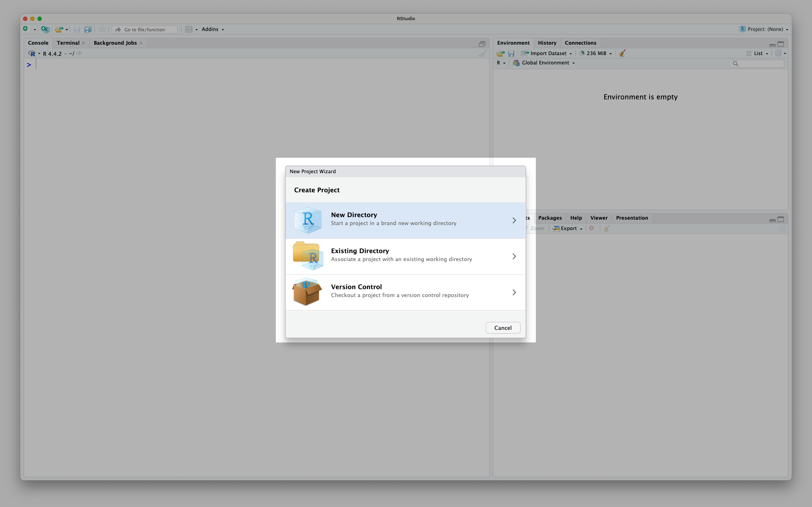
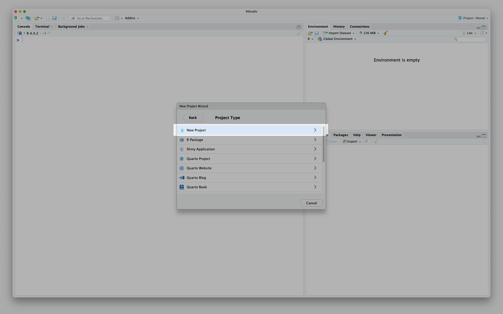
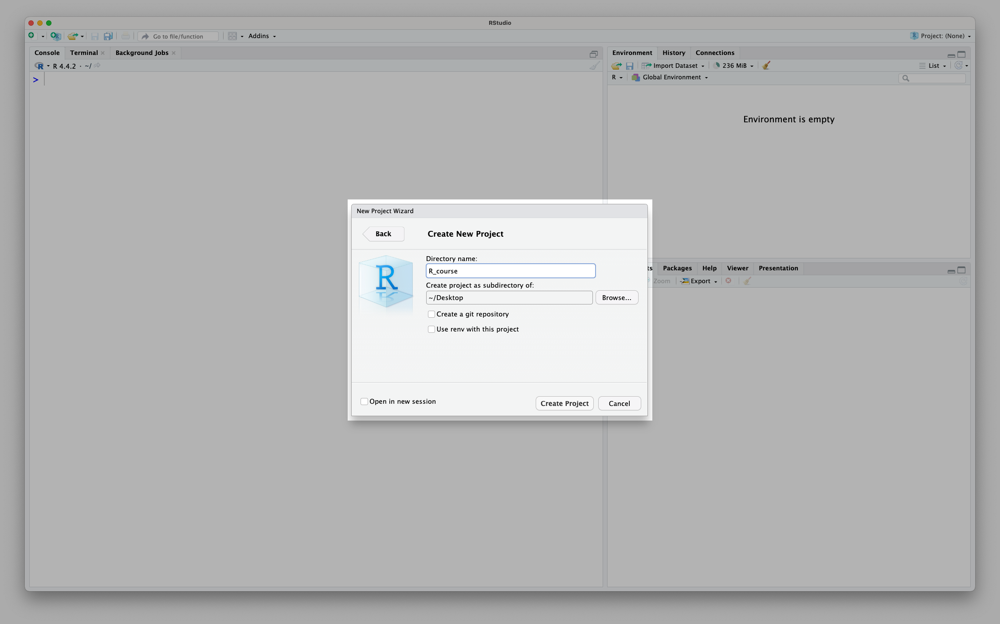

oops I forgot the hashtagError: <text>:1:6: unexpected symbol
1: oops I
^In this session, we will get familiar with R.
Use RStudio to create an R project and R script
Perform basic mathematical operations, comparisons and function calls in R
Store the results of analysis in variables
Describe the different data types and data structures used in R
Recall how to use RStudio to find data files and read them in as data frames
R is a free and popular statistical programming language, great for performing data analysis. RStudio is a free integrated development environment (IDE) that provides useful support features for writing code. During this course, we will learn how to use RStudio’s handy features like projects (which help us to keep track of different analyses) and the environment panel (which shows us all of our data/variables in one place).
Rstudio Projects are a way we can organise our work in RStudio, so that we can resume where we left off and keep different analyses separate. Any time you start working on something new (like this course!) it is recommended that you start a new project. You can see the current project you’re working on, switch between projects or create a new project using the menu in the top right hand corner of RStudio:

To begin this course, let’s make a new project. We’ll do this in a new directory (folder) so that everything stays organised:

Next, we need to tell R that we want to make a ‘New Project’ and not any of the other fancy things we could create:

Finally, we need to give our project an informative name:

You’ll notice I named my project using an underscore (R_course) rather than a space (R course). In general, when coding we want to name things without spaces, so that it is clear to the computer that we are talking about a single entity (the ‘R_course’) as opposed to multiple things (‘R’ and ‘course’). We’ll revisit this idea later in the session in Section 1.4
Now that our project is set up, we need to create a file to write our code in:

This file is called an R Script. Don’t forget to save your R Script as you work so you don’t lose your progress! You can do this through the file menu or by using the keyboard shortcut Cmd-SCmd-S.
At this point, your RStudio window should look like this, with four different panels visible:

This is what they’re used for:
The R Script panel. This is a text document where you can write code, and run it by highlighting the code or putting your cursor on that line, then pressing the ‘run’ button in the top-right corner or using the Cmd-EnterCmd-Enter keyboard shortcut.
The console. This is where the output (results) of your code will appear. You can also run code in the console, by typing it next to the > symbol and pressing EnterEnter but it’s better to use the R Script, as the code you write there is saved and acts as a record of your work.
The environment panel. This is where the data and variables you use in your analysis will be listed. More on this later.
The files/plot/help panel.
Under the ‘files’ tab you can see the files in your current folder
Under the ‘plots’ tab you can view the plots you have created
Under the ‘help’ tab you can read manual pages to learn how to use functions
Although there are other tabs for some of these panels, they are used for more niche things out of scope of this course. You can read more about it in the RStudio documentation.
Now we are ready to write our bit of code! We’ll start with one of the most important concepts in programming: comments. Comments are lines of our script that begin with # and they are ignored by the computer: they are just notes that we write to ourselves. It’s really important to write ‘well-commented’ code, with plenty of comments that clearly explain what your code is doing, so that your script can easily be understood by whoever looks at it next (whether this is someone else or you revisiting an analysis many months later!)
If you forget the # at the start of your comment, R will try to interpret your notes as actual code, and you’ll get an error message:
oops I forgot the hashtagError: <text>:1:6: unexpected symbol
1: oops I
^During this course, we will practice writing well-commented code, but here is an example of how we could write comments to explain the code for one plus one:
# calculate one plus one
1 + 1 # the + symbol means plusNote that comments can be written on their own line or at the end of a line after the code. Crucially, you cannot write any code after a # on the same line, as R will ignore it. This is sometimes useful for ‘commenting out’ code that you don’t want to run, but want to keep in your script for later use.
To practice running R code, let’s do some maths. Here’s how to code some basic mathematical operations in R:
| Operation | Code | Example |
|---|---|---|
| Addition | + |
one plus one: 1 + 1 |
| Subtraction | - |
two minus ten: 2 - 10 |
| Multiplication | * |
eight times 4: 8 * 4 |
| Division | / |
ten divided by 3: 10 / 3 |
| Exponents | ^ |
three squared: 3 ^ 2 |
| Brackets | () |
sixteen divided by the result of three minus one: 16 / (3 - 1) |
Like in regular maths, R follows the order of operations. Here, the 3 + 2 in the brackets will be evaluated first, and then result will be multiplied by 7.
# brackets evaluate first
(3 + 2) * 7[1] 35You might notice when running this code that before the output (result), there is a number one that looks like this: [1]. This relates to the length of our output, which here is just one single number (hence the 1). Later in the session we will write code with longer output, and the purpose of this number will become clearer, but you can ignore it for now.
Above we used spaces between the numbers and mathematical operators in our code. R understands code without spaces too, but this makes it easier to read. Note that this is different to when we are naming things, when spaces are bad!
# spaces don't matter in code
3 ^ 2[1] 9# so both of these should give the same result
3^2[1] 9Try these practice questions to test your understanding
1. Which R expression would give me a result of 10?
✔(2 * 3) + (2 ^ 2)
✗(5 - 3) * 4
✗1 + 1
✗20 - 1
2. What would be the result of running this line of R code: # test 1+1
✗1
✗2
✗An error
✔Nothing
(2 * 3) + (2 ^ 2) is equal to 10. If you’re not sure, try copy-pasting this code into the console and running it! The best way to learn is by doing.
The code # test 1+1 is a comment, because it starts with a #. This means R ignores it: if you run this code, you won’t see any output in the console.
R can perform comparisons, using the following notation:
| Comparison | Code |
|---|---|
| Equal to | == |
| Not equal to | != |
| Greater/less than | > or < |
| Greater/less than or equal to | >= or <= |
Be careful to use double equal signs == when checking for equality. If you use only one, you’ll get an error:
1 == 1 # this is TRUE[1] TRUE1 = 1 # this gives an errorError in 1 = 1: invalid (do_set) left-hand side to assignmentComparisons in R return either TRUE or FALSE:
10 > 10[1] FALSE10 >= 10[1] TRUEYou can also negate the result of a comparison or any TRUE/FALSE value by using the ! operator before the expression.
# gives FALSE (i.e. not TRUE)
!TRUE[1] FALSE# gives TRUE: 1 is not equal to 2, but we've negated the result
!(1 == 2)[1] TRUEThis is really useful for filtering data, which we will cover in Session 2
Try these practice questions to test your understanding
1. What would be the result of running this R code: 10 >= 10
✗10
✗FALSE
✔TRUE
✗An error
2. Which of the following R expressions would give me a result of FALSE?
✗1 == 1
✗1 != (3 - 4) * 1
✗1 = 10
✔1 == 2
3. What would be the result of running this R code: !TRUE
✔FALSE
✗TRUE
✗An error
✗Nothing
10 >= 10 is TRUE because 10 is equal to 10, and we are using the greater than or equal to operator, >=.1 == 2 is the only expression that would give a result of FALSE. Be mindful that 1 = 10 is not a valid expression in R, and would give an error (since we need to use the double equal sign == for comparisons).!TRUE is FALSE because we are negating the value using !.A variable (also known as an object) in R is like a label we can use to keep track of values. We assign (save) values to variables so that we can refer to them later.
For example, let’s say I use R to do some maths:
(2 + 6) * 7[1] 56R outputs simply the result. To use this value later, I would need to assign the output to a variable.
Variables are assigned with the assignment operator <- (you can type this using the << and -- keys, or use the shortcut alt-alt-).
You might be familiar with assigning values to variables using the equal sign =, which is used in other programming languages and in maths. Although this does also work in R, it’s preferred to use the arrow <- as this makes it really clear that a variable is being assigned. In this course we’ll be using <-.
Returning to our example, let’s save the result of the above calculation to a variable called my_number
# assign the result to my_number
my_number <- (2 + 6) * 7Here, R has performed the calculation to the right of the arrow ((2 + 6) * 7) and assigned the result of this to the my_number variable.
You’ll notice that this line of code doesn’t produce any output, because it has gone straight into our variable. If we want to know the value of my_number, we can either run it as a line of R code, like so:
my_number[1] 56Or, we can look at the environment panel in RStudio:

Variables can be used in place of values (e.g. numbers) in R code. For example, we can use the my_number variable in a calculation:
# multiply my_number by 2
my_number * 2[1] 112As the name suggests, variables can vary! We can assign a new value to a variable at any time:
# change the value of my_number to 12
my_number <- 12
my_number[1] 12Because the right hand side of the arrow is evaluated first, you can also assign to a variable a calculation that involves itself:
# add 5 to my_number
my_number <- my_number + 5
my_number # value is now 17 since 12 + 5 = 17[1] 17One thing we need to be careful of when using variables is that R is case-sensitive. This means that MY_NUMBER is not the same as my_number:
# create the my_number variable
my_number <- (2 + 6) * 7
# produces error because MY_NUMBER is not the same as my_number
MY_NUMBERError in eval(expr, envir, enclos): object 'MY_NUMBER' not foundThere’s not really any harm in keeping variables around, but if you would like to remove them you can use the rm() function like so:
# assign a variable
my_variable <- 10
# remove it
rm(my_variable) # put the variable name inside the bracketsWe’ll cover functions in more detail in Section 1.5.
If you want to remove ALL the variables you’ve assigned and start fresh, you can use the broom button in the environment panel:

Try using the broom to clean up your environment after completing the practice exercises at the end of this section.
When naming variables, we need to follow these rules:
| Rule | Examples |
|---|---|
| Variable names can only contain letters, numbers and underscores | ✅ Allowed: ❌ Not allowed: |
| Variable names can’t start with a number | ✅ Allowed: ❌ Not allowed: |
| Variable names can’t contain spaces | ✅ Allowed: ❌ Not allowed: |
If we try to create a variable that breaks these rules, R will give an error:
# gives an error because we use a non-allowed character
percentage% <- 100Error: <text>:2:11: unexpected input
1: # gives an error because we use a non-allowed character
2: percentage% <- 100
^# gives an error because we start with a number
1place <- 1Error: <text>:2:2: unexpected symbol
1: # gives an error because we start with a number
2: 1place
^# gives an error because we have a space
my age <- 5Error: <text>:2:4: unexpected symbol
1: # gives an error because we have a space
2: my age
^RStudio will try to help you spot these mistakes in your script, by using underlining them in red:

Beyond those three key rules, there are also some best practices we should try to keep in mind when naming our variables:
Try not to use capital letters. Since R is case sensitive, Genes is a different variable to genes. It can be easy to forget to use a capital letter, so it’s generally better to avoid them if you can.
Use descriptive names. It’s better to use a longer name that describes what the variable is for, rather than a short name that doesn’t give much information. For example, gene_counts is better than gc. You’ll thank yourself later when you come back to your code and can’t remember what gc stands for!
Avoid using names that are already used in R. For example, mean is a function in R that calculates the average of a set of numbers. If you use mean as a variable name, this could lead to errors: how will R know if you are referring to the function mean or your variable mean?
Try these practice questions to test your understanding
1. How would I assign the value of 10 to a variable called my_variable?
✗10
✔my_variable <- 10
✗my_variable = 10
✗my variable <- 10
2. I have assigned the value of 10 to a variable called my_variable as in Q1. What then would be the output from running this line of R code: my_variable + 5?
✗An error
✗Nothing
✗5
✔15
3. I have assigned the value of 10 to a variable called my_variable as in Q1. If I run the code my_variable <- my_variable + 10, what is the new value of my_variable?
✗10
✗25
✔20
✗my_variable
4. Which of the following is a valid variable name?
✗10th_place
✗(n)_mice
✗disease status
✔expression_level
my_variable <- 10 is the correct way to assign the value of 10 to a variable called my_variable. Remember the arrow <- is used for assignment in R.my_variable is 10 and we are adding 5 to it.my_variable would be 20, since we are adding 10 to the current value of my_variable (which is 10). Note that even though we added 5 to my_variable earlier, this value is not saved anywhere (since we didn’t assign it), so we are starting from the original value of 10.expression_level is the only valid variable name. 10th_place starts with a number, (n)_mice contains brackets, and disease status contains a space.Functions are programs that take inputs (also known as arguments) and produce outputs. They have a name, followed by round brackets () which contain the arguments.
For example, when we used the code rm(my_variable) earlier, the function rm() was taking the input (argument) my_variable and producing the output of deleting that variable.
Some functions have multiple arguments, which are specified by separating them with commas. Arguments have a set order in which they can be given, or they can be referred to specifically by their name (using a equal sign = to provide a value).
As an example, the round() function rounds a number to a specified number of decimal places. The first argument is the number to be rounded, and the second argument is the number of decimal places to round to.
# we'll use this decimal to demonstrate the round function
decimal <- 3.14159
# round to 3 decimal places
round(decimal, digits = 3)[1] 3.142# we don't have to specify the argument name if we provide the arguments in the correct order
round(decimal, 3)[1] 3.142We can see that both of our calls to the round() function produced the same result, but the first is easier to understand since we explicitly specified the argument.
Many arguments have default values so you don’t need to specify every argument for every function. For example, the round() function has a default value of 0 for the digits argument, so if you don’t specify it, the number will be rounded to the nearest whole number.
round(decimal)[1] 3Here are some common errors you might encounter when using functions. Have a look at the code below and read the error messages to see how the two relate. This will help you to fix typos/errors in your own code.
# forgot to enclose the arguments in brackets
round 3.14159Error: <text>:2:7: unexpected numeric constant
1: # forgot to enclose the arguments in brackets
2: round 3.14159
^# forgot the comma between the arguments
round(3.14159 digits = 3)Error: <text>:2:15: unexpected symbol
1: # forgot the comma between the arguments
2: round(3.14159 digits
^# spelt the argument name wrong
round(3.14159, digts = 3)Error in round(3.14159, digts = 3): unused argument (digts = 3)# forgot to close the brackets
round(3.14159, digits = 3Error: <text>:3:0: unexpected end of input
1: # forgot to close the brackets
2: round(3.14159, digits = 3
^RStudio will also flag some of these sorts of issues in the script panel, although it won’t catch everything:

When you’re using a function, you might not know what arguments it takes, what they do or what their default values are. Nobody can remember all of this information, so one of the most important skills in programming is learning how to access help.
You can access the help pages for a function by typing ? followed by the name of the function:
?roundOr searching for the function in the help tab in RStudio:

Here’s what the help page looks like for the round function:

Help pages can sometimes be quite technical or complicated– for example the help page for round also describes various other similar functions for rounding numbers. Often the most important section to look at is the ‘arguments’ one:

You can also see help for functions in the script panel, as you are typing your code:

It will also suggest you the names of arguments:

So, if you get stuck with how to use a function, wait a moment and see if RStudio will suggest what you need.
Sometimes, the R help pages can be pretty tricky to understand, and they can’t help you if you don’t know the name of the function you need! In this course, we’ll learn about lots of different functions, but even R experts need to look things up sometimes. Here are some good resources for getting help:
Google. R is a pretty popular language, so if you google ‘how to do x in R’, you’ll probably find an answer
Package vignettes. Many R packages have vignettes, which are short guides to using the package. Once you find the name of a package you might want to use, you should go through their vignettes to see what functions are available and how to use them.
ChatGPT (or similar). AI tools can be really useful in helping you write code, although make sure you double-check the results because it can make mistakes. Tips and advice on how to effectively use AI tools is available in the “Further reading” section.
Ask others! There are lots of R users, and working together is often the best way to solve problems. This could be through online forums, like StackOverflow or in-person
No matter where you get your help, try to make sure you understand the code you find. Reading the help pages for new functions, or asking an AI like ChatGPT to explain what code is doing is a great way to expand your R knowledge. We also list some recommended additional resources in the “Useful references” section of “Further reading”.
Try these practice questions to test your understanding
1. What would be the result of running this R code: round(3.14159, digits = 2)
✗3.14159
✗3.141
✔3.14
✗3
2. Look up the help pages for the following functions, and describe what they do:
mean()Sys.Date()sin()3. What is wrong with this line of R code: round(3.14159, digits = 3
✗Digits is not a valid argument for the round function
✗You need to use a double equal sign == for the digits argument
✗You don’t need to specify the digits argument
✔You need to close the brackets at the end of the line
4. Which of the following lines of R code will run without error?
✗rm(my_variable
✗round(3.14159, Digits = 3)
✗round(3.14159 digits = 3)
✔round(3.14159, 3)
round(3.14159, digits = 2) would be 3.14. Remember the round() function rounds the number 3.14159 to 2 decimal places, according to the digits argument.mean() function calculates the average of a set of numbers, Sys.Date() returns the current date, and sin() calculates the sine of an angle (in radians).round(3.14159, digits = 3 is missing a closing bracket at the end, which is why it would produce an error.round(3.14159, 3) will run without error. The other lines of code have errors: rm(my_variable is missing a closing bracket, round(3.14159, Digits = 3) has a typo in the argument name (argument names are case sensitive), and round(3.14159 digits = 3) is missing a comma between the arguments. Remember that we don’t always need to specify the argument names if we provide the arguments in the correct order, which is why we could omit the digits = part in the correct line of code.Every variable in R has a ‘type’. The type tells R what kind of data it is and consequently what it can and can’t do with the data. For example, it makes sense to perform mathematical functions like multiplication or division on numbers but not on words.
There are three basic types of data in R:
| Type | Description | Examples |
|---|---|---|
logical |
also known as ‘boolean’, true or false |
|
numeric |
numbers |
|
character |
text/numbers surrounded by quotation marks (double "" or single ''). Also known as a ‘string’ |
|
These are called ‘atomic’ data types as they are the most basic types of data from which other data types derive.
You can find the type of something using the class() function:
class(TRUE)[1] "logical"class(1)[1] "numeric"# whatever you put in quotation marks is always a character
class("hello")[1] "character"class("TRUE")[1] "character"class("123")[1] "character"It is important to know the type of your data because, as mentioned earlier, R will not let you perform certain operations on data of the wrong type. For example, you can’t add two characters together:
# this works
1 + 1[1] 2# but this gives an error
"1" + "1"Error in "1" + "1": non-numeric argument to binary operatorNor can you use the logical operator ! on a character:
# this works
!TRUE[1] FALSE# but this gives an error
!"TRUE"Error in !"TRUE": invalid argument typeYou’ll notice that the error messages for these two examples explain that R can’t perform the operation you’re asking it to do on that data type.
If you want to change the type of a piece of data, you can use the as.x() functions like (e.g.as.logical(), as.numeric(), and as.character()):
# convert a number to a character
as.character(100)[1] "100"# convert a character to a number
as.numeric("100")[1] 100Of course, it doesn’t make sense to make some conversions. In the example below, we can’t convert the word “hello” to a number, so we get an NA:
# if a conversion is not possible, you'll get an NA
as.numeric("hello")Warning: NAs introduced by coercion[1] NATry these practice questions to test your understanding
1. What are the three atomic data types in R?
✔logical, numeric, character
✗integer, float, string
✗dataset, vector, matrix
✗boolean, text, number
2. How do you find the type of a piece of data in R?
✗You can’t
✗Using the type() function
✗Guess
✔Using the class() function
3. How would you convert the character “TRUE” to a logical?
✗TRUE
✔as.logical("TRUE")
✗You can’t convert a character to a logical
✗Using the logical() function
4. What are the types of the following?
11
"eleven"
TRUE
!FALSE
0.49826
"-0.53"
as.numeric("11")
class() function.as.logical("TRUE") (we always use ‘as…’ functions to convert between types).11 is numeric"eleven" is characterTRUE is logical!FALSE is logical0.49826 is numeric"-0.53" is character (even though it looks like a number, it is surrounded by quotation marks so it is a character)as.numeric("11") is numeric (since we converted the character “11” to a number with the as.numeric() function)Beyond the atomic data types, R has more complex data structures that can store multiple values. These are the building blocks of data analysis in R. The most common data structures are vectors, matrices, and data frames.
This figure summarises their key differences:

A vector is a collection of values of the same atomic type. Values in a vector are laid out linearly, one after another.
You can create vectors with the c() function, like so:
# a vector of numbers
c(1, 2, 3)[1] 1 2 3# a vector of characters
c("a", "vector", "of", "characters")[1] "a" "vector" "of" "characters"# a vector of logicals
c(TRUE, FALSE, TRUE)[1] TRUE FALSE TRUEFun fact: the ‘c’ in c() stands for ‘combine’.
There are a few ways to see the contents of a vector. You can simply type the name of the vector into the console, which will print out the whole thing:
# in these examples we will use the letters vector that is
# pre-loaded in R. It contains the alphabet in lowercase
letters [1] "a" "b" "c" "d" "e" "f" "g" "h" "i" "j" "k" "l" "m" "n" "o" "p" "q" "r" "s"
[20] "t" "u" "v" "w" "x" "y" "z"You’ll notice that, in addition to the [1] that we usually see printed next to the output, there is also a [20]. This number is telling us where we are up to in the vector (so [1] means that line of output starts with the first element, "a" and [20] means that line of output starts with the 20th element of the vector, "t").
But what if we don’t always want to print the whole thing? For long vectors, it’s handy to use the head() and tail() functions to inspect just a few values. By default, these print the first and last 6 elements of a vector (you can change that by setting the n argument).
# use head() and tail() to take a quick look
head(letters)[1] "a" "b" "c" "d" "e" "f"tail(letters)[1] "u" "v" "w" "x" "y" "z"You can also use functions to look at other features of a vector, like its type (using the class() function just as for single values) or its length (using the length() function):
# find the class of a vector
class(letters)[1] "character"# find the length of a vector
length(letters)[1] 26Just like you can with single values, vectors can be assigned to variables:
pet_names <- c("sprinkle", "lucky", "coco")These variables will show up in the ‘Environment’ tab in RStudio:

You’ll notice vector variables are displayed a little differently to those with single values. The type (chr, for character) is displayed first, followed by [1:3] which tells you that the pet_names vector has elements from 1 to 3 (in other words, it has a length of 3). This is particularly helpful when part of the vector is cut off, like in this picture!
In programming, the colon : is typically used to create sequences of numbers. You can use it to create a sequence of numbers from a starting point to an ending point.
For example, 1:5 creates a vector of numbers from 1 to 5:
1:5[1] 1 2 3 4 5R is a vectorised language, which means that many functions and operations (like *, + etc) work directly on vectors without you having to write extra code. For example, we can use the mean() function to calculate the average of a vector of numbers:
# create a vector of numbers
numbers <- c(1, 2, 3, 4, 5)
# calculate the mean
mean(numbers)[1] 3Because the other data structures we’ll cover are built on vectors, this concept will be useful for them as well.
A matrix is the two-dimensional extension of the vector– it stores a collection of values of the same type that are laid out in a grid with rows and columns. An example of this is a gene count matrices where each row represents a gene, each column represents a sample and therefore each cell represents the count for a particular gene in a particular sample.
You can create a matrix using the matrix() function. The first argument is the vector of values to be put into the matrix, and the nrow and ncol arguments specify the number of rows and columns in the matrix:
# create a 2x2 matrix and assign it to gene_counts
gene_counts <- matrix(c(1, 2, 3, 4), nrow = 2, ncol = 2)
# print the matrix
gene_counts [,1] [,2]
[1,] 1 3
[2,] 2 4Usually though you would read in a matrix from a file (e.g. the gene count matrix from a sequencing experiment).
Matrices are their own type of object in R:
class(gene_counts)[1] "matrix" "array" And they show up in the environment panel in RStudio under ‘Data’: 
The rows and columns are usually labelled with names, although these names are considered metadata rather than being a part of the matrix. You can set them by assigning vectors of names to the rownames() and colnames() functions:
# set row and column names
rownames(gene_counts) <- c("gene1", "gene2")
colnames(gene_counts) <- c("sample1", "sample2")
# print the matrix, now with names!
gene_counts sample1 sample2
gene1 1 3
gene2 2 4Data frames are similar to matrices in that they store data in rows and columns. The difference is each column can have a different type: for example you could have a column of gene names (character), a column of gene counts (numeric) and another column telling you whether or not the gene is protein-coding (logical). For this reason, data frames are the most common data structure used in R.
You can create a data frame using the data.frame() function. The arguments are vectors of values to be put into the data frame, with the names of the vectors becoming the column names:
# create a data frame
mouse_facts <- data.frame(
name = c("mickey", "minnie", "stuart"),
age = c(12, 8, 16),
weight = c(39.7, 42.2, 46.3)
)
# print the data frame
mouse_facts name age weight
1 mickey 12 39.7
2 minnie 8 42.2
3 stuart 16 46.3When creating a data frame, it’s important that all vectors are the same length. If they’re not, you’ll get an error:
mouse_facts <- data.frame(
name = c("mickey", "minnie", "stuart"),
age = c(12, 8), # forgot to add stuart's age!
weight = c(39.7, 42.2, 46.3)
)Error in data.frame(name = c("mickey", "minnie", "stuart"), age = c(12, : arguments imply differing number of rows: 3, 2For the rest of this section, we’ll use the iris data set that comes pre-loaded in R. This is a bigger data set that contains measurements of different species of iris flowers, and will help us to learn how to work with data frames in R.
First, let’s load in the dataset using the data() function:
data(iris)iris has the class data.frame:
class(iris)[1] "data.frame"Just like for vectors, there are functions to look at the contents of a data frame. This is useful as printing the whole data frame can be overwhelming if it’s large (try printing iris and see for yourself!). The head() and tail() functions work the same way as for vectors:
head(iris) Sepal.Length Sepal.Width Petal.Length Petal.Width Species
1 5.1 3.5 1.4 0.2 setosa
2 4.9 3.0 1.4 0.2 setosa
3 4.7 3.2 1.3 0.2 setosa
4 4.6 3.1 1.5 0.2 setosa
5 5.0 3.6 1.4 0.2 setosa
6 5.4 3.9 1.7 0.4 setosatail(iris) Sepal.Length Sepal.Width Petal.Length Petal.Width Species
145 6.7 3.3 5.7 2.5 virginica
146 6.7 3.0 5.2 2.3 virginica
147 6.3 2.5 5.0 1.9 virginica
148 6.5 3.0 5.2 2.0 virginica
149 6.2 3.4 5.4 2.3 virginica
150 5.9 3.0 5.1 1.8 virginicaYou can also use the View() function to open the data frame in a new tab in RStudio:
# don't forget the capital V!
View(iris)This will open a new tab in RStudio with the data frame displayed in a spreadsheet-like format, where you can sort and filter the columns to get a better view of the data:

Another way to view the data frame is by clicking on its name in the environment panel:

This panel also shows you the names and types of the columns in the data frame. You might notice that the Species is described as a factor, which is a special type of data in R that we’ll cover in Chapter 3.
Before the column names, you’ll see the $ symbol. The dollar sign $ is a shortcut used in R to access columns of a data frame. For example, to access the Petal.Width column of the iris data frame, you can use iris$Petal.Width:
iris$Petal.Width [1] 0.2 0.2 0.2 0.2 0.2 0.4 0.3 0.2 0.2 0.1 0.2 0.2 0.1 0.1 0.2 0.4 0.4 0.3
[19] 0.3 0.3 0.2 0.4 0.2 0.5 0.2 0.2 0.4 0.2 0.2 0.2 0.2 0.4 0.1 0.2 0.2 0.2
[37] 0.2 0.1 0.2 0.2 0.3 0.3 0.2 0.6 0.4 0.3 0.2 0.2 0.2 0.2 1.4 1.5 1.5 1.3
[55] 1.5 1.3 1.6 1.0 1.3 1.4 1.0 1.5 1.0 1.4 1.3 1.4 1.5 1.0 1.5 1.1 1.8 1.3
[73] 1.5 1.2 1.3 1.4 1.4 1.7 1.5 1.0 1.1 1.0 1.2 1.6 1.5 1.6 1.5 1.3 1.3 1.3
[91] 1.2 1.4 1.2 1.0 1.3 1.2 1.3 1.3 1.1 1.3 2.5 1.9 2.1 1.8 2.2 2.1 1.7 1.8
[109] 1.8 2.5 2.0 1.9 2.1 2.0 2.4 2.3 1.8 2.2 2.3 1.5 2.3 2.0 2.0 1.8 2.1 1.8
[127] 1.8 1.8 2.1 1.6 1.9 2.0 2.2 1.5 1.4 2.3 2.4 1.8 1.8 2.1 2.4 2.3 1.9 2.3
[145] 2.5 2.3 1.9 2.0 2.3 1.8Try typing this code into your R script. You’ll notice once you write iris$, RStudio will list out all of the columns like so:

You can navigate through these suggestions using the up and down arrow keys, and press EnterEnter or TabTab to select the column you want.
These columns are vectors, so you can use the functions we’ve learned about so far to work with them:
# find the class of the Petal.Width column
class(iris$Petal.Width)[1] "numeric"# find the average Petal.Width column
mean(iris$Petal.Width)[1] 1.199333Try these practice questions to test your understanding
1. Which of the following is NOT a valid vector in R?
✗c(TRUE, FALSE, FALSE)
✔(1, 2, 3, 4)
✗1:10
✗c("cat", "dog", "fish")
2. What is the result of running this R code: c(1, 2, 3) * 2?
✗2(1, 2, 3)
✗c(1, 2, 3, 1, 2, 3)
✗c(1, 2, 3, 2)
✔c(2, 4, 6)
3. What is the difference between a matrix and a data frame?
✔A matrix has all elements of the same type, while a data frame can have different types in each column
✗They’re the same thing
✗A matrix can only contain numbers, while a data frame can contain numbers and text
✗A matrix is used for mathematical operations, while a data frame is used for data analysis
4. I wrote this code to create a data frame, but it gave me an error. What is wrong with it?
favourite_fruits <- data.frame(
fruit = c("apple", "banana", "cherry"),
colour = c("red", "yellow", "red"),
price = c(0.5, 0.3)
)✗The column names are not in quotation marks
✔The columns are not the same length: ‘fruit’ and ‘colour’ have 3 elements, but ‘price’ has 2
✗It’s not allowed to have character columns and numeric columns in the same data frame
✗You should use the tibble() function instead of data.frame()
5. What is NOT a way that I could view the contents of a data frame in R?
✗Running the name of the data frame as code in the R script panel
✗Typing the name of the data frame into the console
✗Clicking on its name in the environment panel
✔Using the view() function
6. I have created the mouse_facts data frame using the code below. How would I calculate the average age of the mice?
mouse_facts <- data.frame(
name = c("mickey", "minnie", "stuart"),
age = c(12, 8, 16),
weight = c(39.7, 42.2, 46.3)
)✗mean(age)
✔mean(mouse_facts$age)
✗average(age)
✗average(mouse_facts$age)
1. The vector (1, 2, 3, 4) is not a valid vector: you need to use the c() function to create a vector in R. The exception is the colon : notation, which creates a sequence of numbers.
2. The result of running c(1, 2, 3) * 2 would be c(2, 4, 6). This is because R is a vectorised language, so the * operator multiplies each element of the vector by 2.
3. The difference between a matrix and a data frame is that a matrix has all elements of the same type (could be character, logical or numeric), while a data frame can have different types in each column.
4. The code to create the data frame favourite_fruits gave an error because the columns are not the same length: ‘fruit’ and ‘colour’ have 3 elements, but ‘price’ has 2. You can’t create a data frame with columns of different lengths. As for the other options, you can have character and numeric columns in the same data frame, the column names don’t need to be in quotation marks (although the code will work if they are), and the tibble() function is an alternative to data.frame() but either is fine.
5. Using the view() function is not a way to view the contents of a data frame in R. The correct function is View() (with a capital ‘V’). All the other options are valid ways to view the contents of a data frame.
6. To calculate the average age of the mice, you would use mean(mouse_facts$age). This is because the age column is part of the mouse_facts data frame, so you need to use the $ symbol to access it, and the function for calculating the average in R is mean().
So far, we’ve explored the basics of R by creating our own data, or using built-in data objects like letters or iris. However, in real life analyses, we almost always need to read in data from files on our computers.
In this section we will use the file named mousezempic_dosage_data.csv, which you can download using the button below:
Place this file into the project directory you have made for this course (it’s generally a good idea to keep all the data and code for a certain analysis together). If you’d like to be more organised, try placing it in a folder called ‘data’.
You can also download the file by running the following R code (note that you will need to have created a ‘data’ folder inside your R project folder first):
dir.create("data") # create data directory if it doesn't exist
# download the file into the data directory
download.file("https://raw.githubusercontent.com/kzeglinski/new_wehi_r_course/refs/heads/main/data/mousezempic_dosage_data.csv", "data/mousezempic_dosage_data.csv")Paths tell R where to find the file you want to read in. They are strings of characters that first include the directory or series of directories in which a file is located, followed by the name of the file itself. For example, the path to a file called my_data.csv in a folder called data would be data/my_data.csv.
In this course, we will use RStudio to help us find the paths to our files, without needing to type them out ourselves. If you’re interested in learning more about paths, codeacademy has a nice simple article on them.
To find a file path easily in RStudio, you can use the file explorer panel. First, open it by clicking on the ‘Files’ tab in the bottom right panel of RStudio:

By default, it will put you in your project directory. If you have data files in a different directory, you can navigate to that directory by clicking on the folders. Here, I have navigated to a folder on my desktop called ‘data’, which is inside the ‘R_course’ folder. Once you’re in the right place, to get the path for that folder, click on More > Copy Folder Path to Clipboard:

This will copy the path to the folder to your clipboard, which you can then paste into your R script. Then, you just need to add a / followed by the name of the file to the end of the path.
For example, the path to the folder in the above image is ~/Desktop/R_course/data, so the path to the mousezempic_dosage_data.csv file is ~/Desktop/R_course/data/mousezempic_dosage_data.csv.
Now that we know how to find our data, we can read it in. We’ll do this using a handy package called readr, that is part of the tidyverse.
Packages are collections of functions that other people have written to help us do specific tasks, beyond what is built-in to R itself. The tidyverse is a collection of packages that help to streamline data analysis in R. To use the tidyverse, we first need to install it. This is done using the install.packages() function, like so:
# install the tidyverse package
# only do this once
install.packages("tidyverse")We only need to install a package once, but you must load it each time you open R. This is done using the library() function:
# load the tidyverse package
# do this every time you open R
library(tidyverse)── Attaching core tidyverse packages ──────────────────────── tidyverse 2.0.0 ──
✔ dplyr 1.1.4 ✔ readr 2.1.5
✔ forcats 1.0.0 ✔ stringr 1.5.1
✔ ggplot2 3.5.1 ✔ tibble 3.2.1
✔ lubridate 1.9.3 ✔ tidyr 1.3.1
✔ purrr 1.0.2
── Conflicts ────────────────────────────────────────── tidyverse_conflicts() ──
✖ dplyr::filter() masks stats::filter()
✖ dplyr::lag() masks stats::lag()
ℹ Use the conflicted package (<http://conflicted.r-lib.org/>) to force all conflicts to become errorsYou’ll see some output from the tidyverse package when you load it, which is just telling you that some of the tidyverse functions have the same name as other functions in R.
If you forget to load a package, R will give you an error when you try to use that package’s functions, so it’s usually a good idea to load all the packages you’ll need at the start of your script to prevent you forgetting to load them the next time you open R. We’ll do this at the start of each session in this course.
To read in our data, we’ll use the read_delim() function from the readr package. This function takes in the path to the file you want to read in (in quotation marks "", as this is a character string) and returns as output a tibble (this is basically the same as a data frame).
read_delim("~/Desktop/R_course/data/mousezempic_dosage_data.csv")The ‘delim’ in ‘read_delim’ stands for delimiter, and refers to the character used to separates columns of the data.
The most common types of delimiter are comma-separated values (.csv files) and tab-separated values (.tsv files). Here’s an example of what they look like:
example.csv
Name, Age
Andy, 10
Bob, 8
example.tsv
Name Age
Andy 10
Bob 8By default read_delim() will guess your delimiter, so it’s easiest to use that to read files, no matter their format. However, if you read other people’s code, you might also encounter the read_tsv() and read_csv() functions which are specifically for reading in tab-separated and comma-separated files, respectively. It’s up to you which you use, just make sure to get the delimiter right! If you try to read in a file with the wrong delimiter, it’ll look like a mess.
As an example, let’s try reading in our comma-separated file with read_tsv(), which is specifically for tab-separated files:
read_tsv("~/Desktop/R_course/data/mousezempic_dosage_data.csv")Rows: 344 Columns: 1
── Column specification ────────────────────────────────────────────────────────
Delimiter: "\t"
chr (1): mouse_strain,cage_number,weight_lost_g,replicate,sex,drug_dose_g,ta...
ℹ Use `spec()` to retrieve the full column specification for this data.
ℹ Specify the column types or set `show_col_types = FALSE` to quiet this message.# A tibble: 344 × 1
mouse_strain,cage_number,weight_lost_g,replicate,sex,drug_dose_g,tail_lengt…¹
<chr>
1 CD-1,1A,3.75,rep1,male,0.00181,18.7,39.1,1
2 CD-1,1A,3.8,rep1,female,0.0018600000000000001,17.4,39.5,2
3 CD-1,1A,3.25,rep1,female,0.00195,18,40.3,3
4 CD-1,1A,NA,rep1,NA,NA,NA,NA,4
5 CD-1,1A,3.45,rep1,female,0.00192999999999999,19.3,36.7,5
6 CD-1,1A,3.65,rep1,male,0.0019,20.6,39.3,6
7 CD-1,1A,3.625,rep1,female,0.00181,17.8,38.9,7
8 CD-1,1A,4.675,rep1,male,0.00195,19.6,39.2,8
9 CD-1,1A,3.475,rep1,NA,0.00192999999999999,18.1,34.1,9
10 CD-1,1A,4.25,rep1,NA,0.0019,20.2,42,10
# ℹ 334 more rows
# ℹ abbreviated name:
# ¹`mouse_strain,cage_number,weight_lost_g,replicate,sex,drug_dose_g,tail_length_mm,initial_weight_g,id_num`We can see that the data is all in one column, which is not what we want!
Depending on where you have put your data, your path to the mousezempic_dosage_data.csv file may be different. You should be able to find the path by following the instructions in the ‘Paths’ section above.
Another conveninent way to get the path of your file (so long as you are working within an R project) is to use a feature called ‘tab completion’. Within R projects, R can discover any files sitting in, or downstream of the project directory. So, assuming our mousezempic_dosage_data.csv file is located within a folder called ‘data’, if we start typing read_delim("data/mouse then press TabTab, R will auto-complete the full file path and close the quotes and bracket for us!
Now, let’s take a look at the output of read_delim():
Rows: 344 Columns: 9
── Column specification ────────────────────────────────────────────────────────
Delimiter: ","
chr (4): mouse_strain, cage_number, replicate, sex
dbl (5): weight_lost_g, drug_dose_g, tail_length_mm, initial_weight_g, id_num
ℹ Use `spec()` to retrieve the full column specification for this data.
ℹ Specify the column types or set `show_col_types = FALSE` to quiet this message.# A tibble: 344 × 9
mouse_strain cage_number weight_lost_g replicate sex drug_dose_g
<chr> <chr> <dbl> <chr> <chr> <dbl>
1 CD-1 1A 3.75 rep1 male 0.00181
2 CD-1 1A 3.8 rep1 female 0.00186
3 CD-1 1A 3.25 rep1 female 0.00195
4 CD-1 1A NA rep1 <NA> NA
5 CD-1 1A 3.45 rep1 female 0.00193
6 CD-1 1A 3.65 rep1 male 0.0019
7 CD-1 1A 3.62 rep1 female 0.00181
8 CD-1 1A 4.68 rep1 male 0.00195
9 CD-1 1A 3.48 rep1 <NA> 0.00193
10 CD-1 1A 4.25 rep1 <NA> 0.0019
# ℹ 334 more rows
# ℹ 3 more variables: tail_length_mm <dbl>, initial_weight_g <dbl>,
# id_num <dbl>The first line tells us how many rows and columns are in the data. Then, the Column specification section tells you:
What delimiter was used to separate values.
Which columns belong to each type. read_delim() is quite clever and will guess this for us, but it’s useful to check and make sure it’s correct.
Then, the data will be printed out as a tibble.
Tibbles are a more modern version of data frames introduced in the tidyverse. They are very similar to data frames, but have some additional features like printing more nicely in the console.
Let’s use iris to highlight the advantages of tibbles:
# need to load the tidyverse package to use tibbles
# see below for more information on loading packages
library(tidyverse)When we print a data frame, it shows every single row and column, which can be overwhelming if the data frame is large:
iris as a data frame!
# print iris
iris Sepal.Length Sepal.Width Petal.Length Petal.Width Species
1 5.1 3.5 1.4 0.2 setosa
2 4.9 3.0 1.4 0.2 setosa
3 4.7 3.2 1.3 0.2 setosa
4 4.6 3.1 1.5 0.2 setosa
5 5.0 3.6 1.4 0.2 setosa
6 5.4 3.9 1.7 0.4 setosa
7 4.6 3.4 1.4 0.3 setosa
8 5.0 3.4 1.5 0.2 setosa
9 4.4 2.9 1.4 0.2 setosa
10 4.9 3.1 1.5 0.1 setosa
11 5.4 3.7 1.5 0.2 setosa
12 4.8 3.4 1.6 0.2 setosa
13 4.8 3.0 1.4 0.1 setosa
14 4.3 3.0 1.1 0.1 setosa
15 5.8 4.0 1.2 0.2 setosa
16 5.7 4.4 1.5 0.4 setosa
17 5.4 3.9 1.3 0.4 setosa
18 5.1 3.5 1.4 0.3 setosa
19 5.7 3.8 1.7 0.3 setosa
20 5.1 3.8 1.5 0.3 setosa
21 5.4 3.4 1.7 0.2 setosa
22 5.1 3.7 1.5 0.4 setosa
23 4.6 3.6 1.0 0.2 setosa
24 5.1 3.3 1.7 0.5 setosa
25 4.8 3.4 1.9 0.2 setosa
26 5.0 3.0 1.6 0.2 setosa
27 5.0 3.4 1.6 0.4 setosa
28 5.2 3.5 1.5 0.2 setosa
29 5.2 3.4 1.4 0.2 setosa
30 4.7 3.2 1.6 0.2 setosa
31 4.8 3.1 1.6 0.2 setosa
32 5.4 3.4 1.5 0.4 setosa
33 5.2 4.1 1.5 0.1 setosa
34 5.5 4.2 1.4 0.2 setosa
35 4.9 3.1 1.5 0.2 setosa
36 5.0 3.2 1.2 0.2 setosa
37 5.5 3.5 1.3 0.2 setosa
38 4.9 3.6 1.4 0.1 setosa
39 4.4 3.0 1.3 0.2 setosa
40 5.1 3.4 1.5 0.2 setosa
41 5.0 3.5 1.3 0.3 setosa
42 4.5 2.3 1.3 0.3 setosa
43 4.4 3.2 1.3 0.2 setosa
44 5.0 3.5 1.6 0.6 setosa
45 5.1 3.8 1.9 0.4 setosa
46 4.8 3.0 1.4 0.3 setosa
47 5.1 3.8 1.6 0.2 setosa
48 4.6 3.2 1.4 0.2 setosa
49 5.3 3.7 1.5 0.2 setosa
50 5.0 3.3 1.4 0.2 setosa
51 7.0 3.2 4.7 1.4 versicolor
52 6.4 3.2 4.5 1.5 versicolor
53 6.9 3.1 4.9 1.5 versicolor
54 5.5 2.3 4.0 1.3 versicolor
55 6.5 2.8 4.6 1.5 versicolor
56 5.7 2.8 4.5 1.3 versicolor
57 6.3 3.3 4.7 1.6 versicolor
58 4.9 2.4 3.3 1.0 versicolor
59 6.6 2.9 4.6 1.3 versicolor
60 5.2 2.7 3.9 1.4 versicolor
61 5.0 2.0 3.5 1.0 versicolor
62 5.9 3.0 4.2 1.5 versicolor
63 6.0 2.2 4.0 1.0 versicolor
64 6.1 2.9 4.7 1.4 versicolor
65 5.6 2.9 3.6 1.3 versicolor
66 6.7 3.1 4.4 1.4 versicolor
67 5.6 3.0 4.5 1.5 versicolor
68 5.8 2.7 4.1 1.0 versicolor
69 6.2 2.2 4.5 1.5 versicolor
70 5.6 2.5 3.9 1.1 versicolor
71 5.9 3.2 4.8 1.8 versicolor
72 6.1 2.8 4.0 1.3 versicolor
73 6.3 2.5 4.9 1.5 versicolor
74 6.1 2.8 4.7 1.2 versicolor
75 6.4 2.9 4.3 1.3 versicolor
76 6.6 3.0 4.4 1.4 versicolor
77 6.8 2.8 4.8 1.4 versicolor
78 6.7 3.0 5.0 1.7 versicolor
79 6.0 2.9 4.5 1.5 versicolor
80 5.7 2.6 3.5 1.0 versicolor
81 5.5 2.4 3.8 1.1 versicolor
82 5.5 2.4 3.7 1.0 versicolor
83 5.8 2.7 3.9 1.2 versicolor
84 6.0 2.7 5.1 1.6 versicolor
85 5.4 3.0 4.5 1.5 versicolor
86 6.0 3.4 4.5 1.6 versicolor
87 6.7 3.1 4.7 1.5 versicolor
88 6.3 2.3 4.4 1.3 versicolor
89 5.6 3.0 4.1 1.3 versicolor
90 5.5 2.5 4.0 1.3 versicolor
91 5.5 2.6 4.4 1.2 versicolor
92 6.1 3.0 4.6 1.4 versicolor
93 5.8 2.6 4.0 1.2 versicolor
94 5.0 2.3 3.3 1.0 versicolor
95 5.6 2.7 4.2 1.3 versicolor
96 5.7 3.0 4.2 1.2 versicolor
97 5.7 2.9 4.2 1.3 versicolor
98 6.2 2.9 4.3 1.3 versicolor
99 5.1 2.5 3.0 1.1 versicolor
100 5.7 2.8 4.1 1.3 versicolor
101 6.3 3.3 6.0 2.5 virginica
102 5.8 2.7 5.1 1.9 virginica
103 7.1 3.0 5.9 2.1 virginica
104 6.3 2.9 5.6 1.8 virginica
105 6.5 3.0 5.8 2.2 virginica
106 7.6 3.0 6.6 2.1 virginica
107 4.9 2.5 4.5 1.7 virginica
108 7.3 2.9 6.3 1.8 virginica
109 6.7 2.5 5.8 1.8 virginica
110 7.2 3.6 6.1 2.5 virginica
111 6.5 3.2 5.1 2.0 virginica
112 6.4 2.7 5.3 1.9 virginica
113 6.8 3.0 5.5 2.1 virginica
114 5.7 2.5 5.0 2.0 virginica
115 5.8 2.8 5.1 2.4 virginica
116 6.4 3.2 5.3 2.3 virginica
117 6.5 3.0 5.5 1.8 virginica
118 7.7 3.8 6.7 2.2 virginica
119 7.7 2.6 6.9 2.3 virginica
120 6.0 2.2 5.0 1.5 virginica
121 6.9 3.2 5.7 2.3 virginica
122 5.6 2.8 4.9 2.0 virginica
123 7.7 2.8 6.7 2.0 virginica
124 6.3 2.7 4.9 1.8 virginica
125 6.7 3.3 5.7 2.1 virginica
126 7.2 3.2 6.0 1.8 virginica
127 6.2 2.8 4.8 1.8 virginica
128 6.1 3.0 4.9 1.8 virginica
129 6.4 2.8 5.6 2.1 virginica
130 7.2 3.0 5.8 1.6 virginica
131 7.4 2.8 6.1 1.9 virginica
132 7.9 3.8 6.4 2.0 virginica
133 6.4 2.8 5.6 2.2 virginica
134 6.3 2.8 5.1 1.5 virginica
135 6.1 2.6 5.6 1.4 virginica
136 7.7 3.0 6.1 2.3 virginica
137 6.3 3.4 5.6 2.4 virginica
138 6.4 3.1 5.5 1.8 virginica
139 6.0 3.0 4.8 1.8 virginica
140 6.9 3.1 5.4 2.1 virginica
141 6.7 3.1 5.6 2.4 virginica
142 6.9 3.1 5.1 2.3 virginica
143 5.8 2.7 5.1 1.9 virginica
144 6.8 3.2 5.9 2.3 virginica
145 6.7 3.3 5.7 2.5 virginica
146 6.7 3.0 5.2 2.3 virginica
147 6.3 2.5 5.0 1.9 virginica
148 6.5 3.0 5.2 2.0 virginica
149 6.2 3.4 5.4 2.3 virginica
150 5.9 3.0 5.1 1.8 virginicaBut when we print a tibble, only a small preview is shown, which is much easier to read:
# print iris as a tibble
as_tibble(iris)# A tibble: 150 × 5
Sepal.Length Sepal.Width Petal.Length Petal.Width Species
<dbl> <dbl> <dbl> <dbl> <fct>
1 5.1 3.5 1.4 0.2 setosa
2 4.9 3 1.4 0.2 setosa
3 4.7 3.2 1.3 0.2 setosa
4 4.6 3.1 1.5 0.2 setosa
5 5 3.6 1.4 0.2 setosa
6 5.4 3.9 1.7 0.4 setosa
7 4.6 3.4 1.4 0.3 setosa
8 5 3.4 1.5 0.2 setosa
9 4.4 2.9 1.4 0.2 setosa
10 4.9 3.1 1.5 0.1 setosa
# ℹ 140 more rowsIt also tells us the number of rows (150) and columns (5) in the data, as well as the types of each column (<dbl> is short for double, which is a type of numeric data).
For the purpose of this course, we can treat tibbles and data frames as the same thing. However, if you’re interested in learning more about tibbles, you can read about them here.
No matter which function you use to read in your data, R simply prints the values out in the console. To actually work with data in R, we need assign our data frame to a variable:
dosage_data <- read_delim("~/Desktop/R_course/data/mousezempic_dosage_data.csv")Rows: 344 Columns: 9
── Column specification ────────────────────────────────────────────────────────
Delimiter: ","
chr (4): mouse_strain, cage_number, replicate, sex
dbl (5): weight_lost_g, drug_dose_g, tail_length_mm, initial_weight_g, id_num
ℹ Use `spec()` to retrieve the full column specification for this data.
ℹ Specify the column types or set `show_col_types = FALSE` to quiet this message.You can also read in data through RStudio’s graphical interface. This is a good way to get the code to read in data if you’re not sure how to do it yourself.
To do this, click on the ‘Import Dataset’ button in the environment panel (for our data, we will use the ‘from Text (readr)’ option):

This will open a window where you can select the file you want to read in, like so:

R will then generate the code to read in the data for you, and you can use the preview to check that it has worked ok:

You can then copy this code and paste it into your script. This step is really important because not only does it helps you to learn how to read in data yourself, it keeps a record in the script of how you read in the data so that you can reproduce your analysis later.

Try these practice questions to test your understanding
1. What is a path?
✗A type of data in R
✗The data you want to analyse
✔A string of characters that tells R where to find a file
✗A function in R
2. What is NOT a way to read in a file called my_data.tsv in R?
✗Using the read_delim() function
✗Using the ‘Import Dataset’ button in RStudio
✗Using the read_tsv() function
✔Using the read_csv() function
3. What do we need to do before we can use functions from readr or any other R package?
✗Install it
✔Install it, then load it into our R session using the library() function
✗Download it
✗Look at the help page for the functions we want to use
1. A path is a string of characters that tells R where to find a file. Note that it isn’t the data itself, but rather the location of the data.
2. The read_csv() function is not a way to read in a file called my_data.tsv, because it is specifically for reading in comma-separated files, so it would not work for a tab-separated file like my_data.tsv.
3. Before we can use functions from readr or any other R package, we need to install it, then load it into our R session using the library() function. Otherwise we will get an error message when we try to use the functions.
Here’s what we’ve learnt in this session:
How to create an R project (to keep our files organised) and how to write and run code from an R script (so that the code is saved as a record of our work)
The operators for basic maths (*, /, + and -) and comparisons (==, <, <= and !)
How to use functions and specify their arguments, as well as how to get help
How to assign variables using the <- operator, and how to name them appropriately
The three basic atomic data types in R (character, numeric and logical)
Three different data structures in R (vectors, matrices and data frames/tibbles)
How to find file paths using RStudio
How to load the readr package and use it to read in files
Try the practice questions below to test your understanding!
What would be the result of evaluating the following expressions? You don’t need to know these off the top of your head, use R to help! (Hint: some expressions might give an error. Try to think about why)
5 + 10100 >= (5 + 2) ^ 2!(100 > 1)500 = 5 * 1002fast <- "zoom"round(428.195721, 2)?t.testclass("banana")class(as.numeric("500"))"1" + "10"length(1:100)sum(c(1, 2, 3, 4))head(iris)mean(iris$Sepal.Width)read_tsv("gene_counts.csv")Write some R code to complete the right-hand side of this comparison: as.numeric("100") * 3 ==
I wrote the following R code, and got an error. How can I fix it?
# the number of frogs I counted
Frog_counts <- c(11, 2, 4, 9, 10)
# convert to a proportion: divide by the sum
frog_counts / sum(Frog_counts)Error in eval(expr, envir, enclos): object 'frog_counts' not foundLoad the iris dataframe into your R session using data(iris). What is the median petal length? Show the code you used to calculate this.
Imagine I have a file called mouse_survival.tsv located in a folder with the path ~/Downloads/experimental_data/latest. Write a line of R code to read in this file and assign it to a variable called mouse_survival
The results of evaluating the expressions are:
5 + 10 is 15100 >= (5 + 2) ^ 2 is TRUE!(100 > 1) is FALSE (although 100 is greater than 1, the ! operator negates this)500 = 5 * 100 gives an error because we need two equals signs == to check for equality in R. Actually this code is trying to assign the value of 5 * 100 to the variable 500, which is not allowed, because variable names can’t start with a number.2fast <- "zoom" gives an error because variable names can’t start with a numberround(428.195721, 2) is 428.2?t.test opens the help page for the t.test() functionclass("banana") is "character"class(as.numeric("500")) is "numeric""1" + "10" gives an error because you can’t add two character strings togetherlength(1:100) is 100sum(c(1, 2, 3, 4)) is 10head(iris) shows the first 6 rows of the iris data framemean(iris$Sepal.Width) is the average of the Sepal.Width column in the iris data frameread_tsv("gene_counts.csv") will try to read in gene_counts.csv as if it were tab-separated, which will result in all the data being in one columnThe right-hand side of the comparison as.numeric("100") * 3 == can be anything that results in 300 e.g. 300 or 299 + 1, for example
The error in the code is because the variable name Frog_counts is not the same as frog_counts. R is case-sensitive, so it thinks you are trying to divide a variable that doesn’t exist. To fix this, make sure all your variables have the same case (lowercase is better!):
# the number of frogs I counted
frog_counts <- c(11, 2, 4, 9, 10)
# convert to a proportion: divide by the sum
frog_counts / sum(frog_counts)[1] 0.30555556 0.05555556 0.11111111 0.25000000 0.27777778To calculate the median petal length in the iris data frame, you can use median(iris$Petal.Length)
To read in the mouse_survival.tsv file and assign it to a variable called mouse_survival, you could use red_delim(): mouse_survival <- read_delim("~/Downloads/experimental_data/latest/mouse_survival.tsv") or read_tsv(): mouse_survival <- read_tsv("~/Downloads/experimental_data/latest/mouse_survival.tsv").